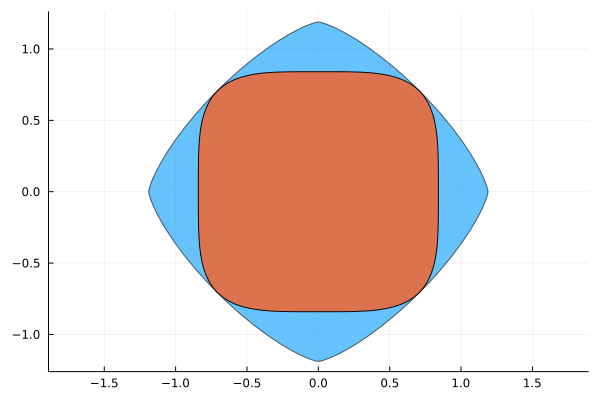

2D plotting


In this notebook we show how to plot the sublevel set of $2x^4 + 2y^4$ and its polar. We first build the corresponding Gram matrix: the polynomial is $\langle z, Q z \rangle$ where $z = (x^2, y^2)$ and $Q = 2I$.
using LinearAlgebra
using DynamicPolynomials
@polyvar x y
using SetProg
gram = SetProg.SumOfSquares.GramMatrix(Matrix{Float64}(2I, 2, 2), [x^2, y^2])GramMatrix with row/column basis:
SubBasis{Monomial}([y^2, x^2])
And entries in a 2×2 MultivariateMoments.SymMatrix{Float64}:
2.0 0.0
0.0 2.0Now we create the set from this Gram matrix representation of the polynomial. We claim that it is convex (as we want to plot the polar) by creating a ConvexPolySet even if we give nothing in place of the convexity certificate.
set = SetProg.Sets.ConvexPolySet(4, gram, nothing)SetProg.Sets.ConvexPolySet{Float64, StarAlgebras.SubBasis{MultivariateBases.Polynomial{Monomial, Vector{DynamicPolynomials.Variable{DynamicPolynomials.Commutative{DynamicPolynomials.CreationOrder}, MultivariatePolynomials.Graded{MultivariatePolynomials.LexOrder}}}, Vector{Int64}}, Int64, Vector{Int64}, StarAlgebras.MappedBasis{MultivariateBases.Polynomial{Monomial, Vector{DynamicPolynomials.Variable{DynamicPolynomials.Commutative{DynamicPolynomials.CreationOrder}, MultivariatePolynomials.Graded{MultivariatePolynomials.LexOrder}}}, Vector{Int64}}, Vector{Int64}, MultivariatePolynomials.ExponentsIterator{MultivariatePolynomials.Graded{MultivariatePolynomials.LexOrder}, Nothing, Vector{Int64}}, MultivariateBases.Variables{Monomial, Vector{DynamicPolynomials.Variable{DynamicPolynomials.Commutative{DynamicPolynomials.CreationOrder}, MultivariatePolynomials.Graded{MultivariatePolynomials.LexOrder}}}}, typeof(MultivariatePolynomials.exponents)}, Vector{Vector{Int64}}}, Float64}(4, GramMatrix with row/column basis:
SubBasis{Monomial}([y^2, x^2])
And entries in a 2×2 MultivariateMoments.SymMatrix{Float64}:
2.0 0.0
0.0 2.0, nothing)We can now plot the set together with its polar:
using Plots
plot(ratio=:equal)
plot!(SetProg.Sets.polar(set), npoints=128, alpha=0.6)
plot!(set, npoints=128, alpha=0.95)
This page was generated using Literate.jl.